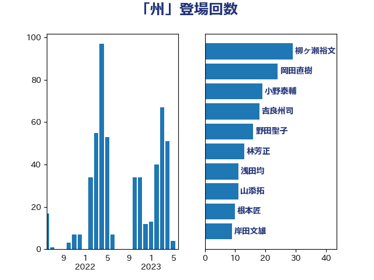

単語「州」

| 柳ヶ瀬裕文 | 日本維新の会 | 34 回 |
| 美延映夫 | 日本維新の会 | 28 回 |
| 音喜多駿 | 日本維新の会 | 22 回 |
| 坂本哲志 | 自由民主党 | 20 回 |
| 吉良州司 | 無所属 | 19 回 |
| 野田聖子 | 自由民主党 | 16 回 |
| 上川陽子 | 自由民主党 | 15 回 |
| 小野泰輔 | 日本維新の会 | 13 回 |
| 篠原孝 | 立憲民主党 | 12 回 |
| 吉川赳 | 無所属 | 11 回 |
| 浅田均 | 日本維新の会 | 10 回 |
| 茂木敏充 | 自由民主党 | 10 回 |
| 宮路拓馬 | 自由民主党 | 7 回 |
| 根本匠 | 自由民主党 | 7 回 |
| 細田博之 | 自由民主党 | 7 回 |
| 鈴木宗男 | 日本維新の会 | 7 回 |
| 伊波洋一 | 無所属 | 6 回 |
| 塩村あやか | 立憲民主党 | 6 回 |
| 寺田静 | 無所属 | 6 回 |
| 住吉寛紀 | 日本維新の会 | 5 回 |
| 松沢成文 | 日本維新の会 | 5 回 |
| 沢田良 | 日本維新の会 | 5 回 |
| 浜田聡 | NHK党 | 5 回 |
| 金子恭之 | 自由民主党 | 5 回 |
| あべ俊子 | 自由民主党 | 4 回 |
| 吉田統彦 | 立憲民主党 | 4 回 |
| 城内実 | 自由民主党 | 4 回 |
| 大島敦 | 立憲民主党 | 4 回 |
| 小泉進次郎 | 自由民主党 | 4 回 |
| 梶山弘志 | 自由民主党 | 4 回 |
| 武田良太 | 自由民主党 | 4 回 |
| 上田清司 | 国民民主党 | 3 回 |
| 北村経夫 | 自由民主党 | 3 回 |
| 山添拓 | 日本共産党 | 3 回 |
| 櫻井周 | 立憲民主党 | 3 回 |
| 牧山ひろえ | 立憲民主党 | 3 回 |
| 田村智子 | 日本共産党 | 3 回 |
| 石川香織 | 立憲民主党 | 3 回 |
| 福島みずほ | 社会民主党 | 3 回 |
| 船田元 | 自由民主党 | 3 回 |
| 近藤和也 | 立憲民主党 | 3 回 |
| 金田勝年 | 自由民主党 | 3 回 |
| 鈴木敦 | 国民民主党 | 3 回 |
| 高良鉄美 | 無所属 | 3 回 |
| 鬼木誠 | 立憲民主党 | 3 回 |
| 鷲尾英一郎 | 自由民主党 | 3 回 |
| 三宅伸吾 | 自由民主党 | 2 回 |
| 中司宏 | 日本維新の会 | 2 回 |
| 丸川珠代 | 自由民主党 | 2 回 |
| 伊藤孝江 | 公明党 | 2 回 |
| 奥野総一郎 | 立憲民主党 | 2 回 |
| 守島正 | 日本維新の会 | 2 回 |
| 室井邦彦 | 日本維新の会 | 2 回 |
| 宮本岳志 | 日本共産党 | 2 回 |
| 小熊慎司 | 立憲民主党 | 2 回 |
| 川田龍平 | 立憲民主党 | 2 回 |
| 掘井健智 | 日本維新の会 | 2 回 |
| 末松義規 | 立憲民主党 | 2 回 |
| 東徹 | 日本維新の会 | 2 回 |
| 林芳正 | 自由民主党 | 2 回 |
| 河野義博 | 公明党 | 2 回 |
| 浦野靖人 | 日本維新の会 | 2 回 |
| 田島麻衣子 | 立憲民主党 | 2 回 |
| 石井章 | 日本維新の会 | 2 回 |
| 穀田恵二 | 日本共産党 | 2 回 |
| 緑川貴士 | 立憲民主党 | 2 回 |
| 緒方林太郎 | 無所属 | 2 回 |
| 芳賀道也 | 国民民主党 | 2 回 |
| 若宮健嗣 | 自由民主党 | 2 回 |
| 葉梨康弘 | 自由民主党 | 2 回 |
| 西村康稔 | 自由民主党 | 2 回 |
| 阿部知子 | 立憲民主党 | 2 回 |
| 青木愛 | 立憲民主党 | 2 回 |
| 高橋はるみ | 自由民主党 | 2 回 |
| 上野賢一郎 | 自由民主党 | 1 回 |
| 中谷真一 | 自由民主党 | 1 回 |
| 串田誠一 | 日本維新の会 | 1 回 |
| 今枝宗一郎 | 自由民主党 | 1 回 |
| 伊東信久 | 日本維新の会 | 1 回 |
| 伊藤孝恵 | 国民民主党 | 1 回 |
| 勝部賢志 | 立憲民主党 | 1 回 |
| 原口一博 | 立憲民主党 | 1 回 |
| 古屋範子 | 公明党 | 1 回 |
| 古賀之士 | 立憲民主党 | 1 回 |
| 大塚拓 | 自由民主党 | 1 回 |
| 宮本徹 | 日本共産党 | 1 回 |
| 小池晃 | 日本共産党 | 1 回 |
| 山下芳生 | 日本共産党 | 1 回 |
| 岡本あき子 | 立憲民主党 | 1 回 |
| 岸田文雄 | 自由民主党 | 1 回 |
| 後藤茂之 | 自由民主党 | 1 回 |
| 日下正喜 | 公明党 | 1 回 |
| 松原仁 | 立憲民主党 | 1 回 |
| 松島みどり | 自由民主党 | 1 回 |
| 梅村聡 | 日本維新の会 | 1 回 |
| 森まさこ | 自由民主党 | 1 回 |
| 江田憲司 | 立憲民主党 | 1 回 |
| 浅野哲 | 国民民主党 | 1 回 |
| 浜地雅一 | 公明党 | 1 回 |
| 渡辺周 | 立憲民主党 | 1 回 |
| 熊谷裕人 | 立憲民主党 | 1 回 |
| 田嶋要 | 立憲民主党 | 1 回 |
| 田村憲久 | 自由民主党 | 1 回 |
| 田村貴昭 | 日本共産党 | 1 回 |
| 石川博崇 | 公明党 | 1 回 |
| 石川昭政 | 自由民主党 | 1 回 |
| 舞立昇治 | 自由民主党 | 1 回 |
| 若松謙維 | 公明党 | 1 回 |
| 蓮舫 | 立憲民主党 | 1 回 |
| 薗浦健太郎 | 自由民主党 | 1 回 |
| 藤川政人 | 自由民主党 | 1 回 |
| 西村智奈美 | 立憲民主党 | 1 回 |
| 西田実仁 | 公明党 | 1 回 |
| 道下大樹 | 立憲民主党 | 1 回 |
| 遠藤良太 | 日本維新の会 | 1 回 |
| 鈴木庸介 | 立憲民主党 | 1 回 |
| 長坂康正 | 自由民主党 | 1 回 |
| 長島昭久 | 自由民主党 | 1 回 |
| 阿部弘樹 | 日本維新の会 | 1 回 |
| 須藤元気 | 無所属 | 1 回 |
| 馬淵澄夫 | 立憲民主党 | 1 回 |
| 高橋千鶴子 | 日本共産党 | 1 回 |